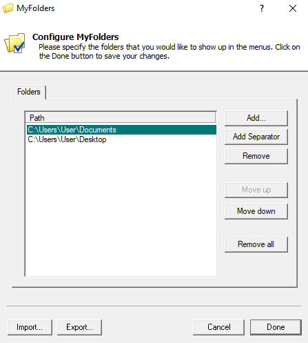
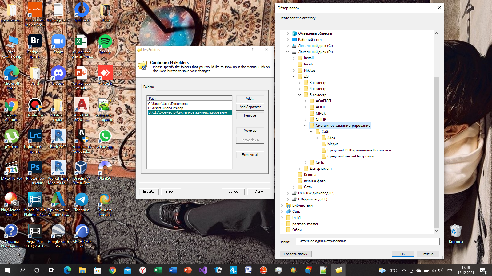
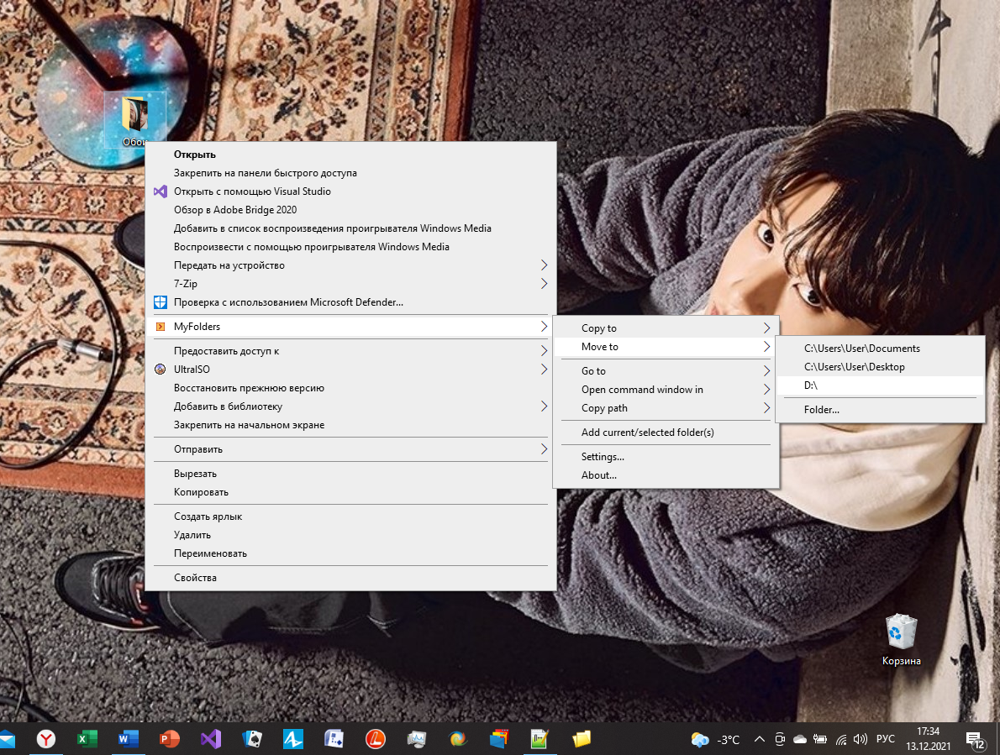
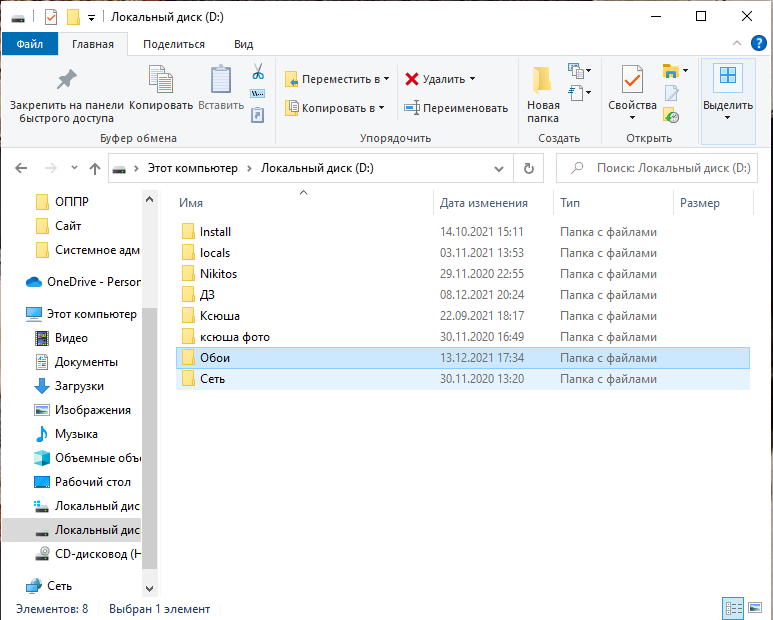

MyFolders
Рисунок 1 - MyFolders
MyFolders - очень простая утилита, размещающая в контекстном меню новый пункт для доступа к любым нужным вам папкам. В настройках программы необходимо просто указать пути к наиболее часто используемым вами каталогам, чтобы иметь возможность в мгновение ока перемещаться к ним из любого окна и приложения.
Вся суть MyFolders состоит в том, что она просто перемещает файлы из одной папки в другую. Единственная разница лишь в том, что это делается с помощью контекстного меню, в котором эта утилита появляется автоматически.
Как обычно выбираем файл, который хотим переместить или скопировать, в контекстном меню ищем строку MyFolders, выбираем действие, которое хотим совершить и выбираем папку для отправки файла. Если же нужной папки нет, ее можно легко добавить с помощью Settings. Открываем настройки, нажимаем на кнопку Add, находим папку и добавляем ее.
Рисунок 2 - Настройки
Рисунок 3 - Добавление папки в список
В настройках так же можно настраивать порядок папок (Move up / down), удалять папки по одной или все сразу (Remove / Remove all). Это, в принципе, все, что есть в этой программе, теперь посмотрим, как она проявит себя в действии.
На рабочем столе у меня лежит папка «Обои», которую я хочу переместить на диск D. На рисунке 4 Вы можете увидеть, как происходит этот процесс по шагам.
Рисунок 4 - Перемещение папки "Обои"
Рисунок 5 - Результат работы программы
По мимо этого с помощью кнопки «Go to» вы можете с легкостью оказаться в любой папке, не заходя в «Мой компьютер».
Честно говоря, читая отзывы об этом приложении, я ожидала большего. На сайтах и форумах говорили, что это одно из лучших средств «тонкой» настройки системы, но никакого «ВАУ!!!»-эффекта я не получила. Программа скучная и спектр ее работы крайне мал, по сравнению с WindowBlinds и Winaero Tweaker. Я бы не стала ее советовать, только если вам наскучил традиционный способ перемещения ваших файлов по носителям или же нужно открыть какую-нибудь папку, не заходя в «Проводник».